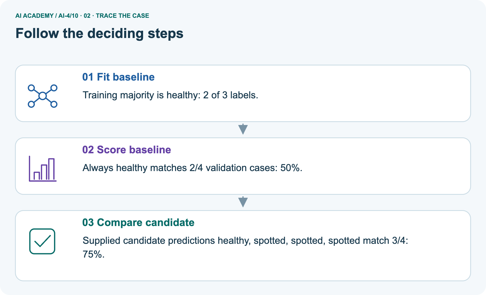
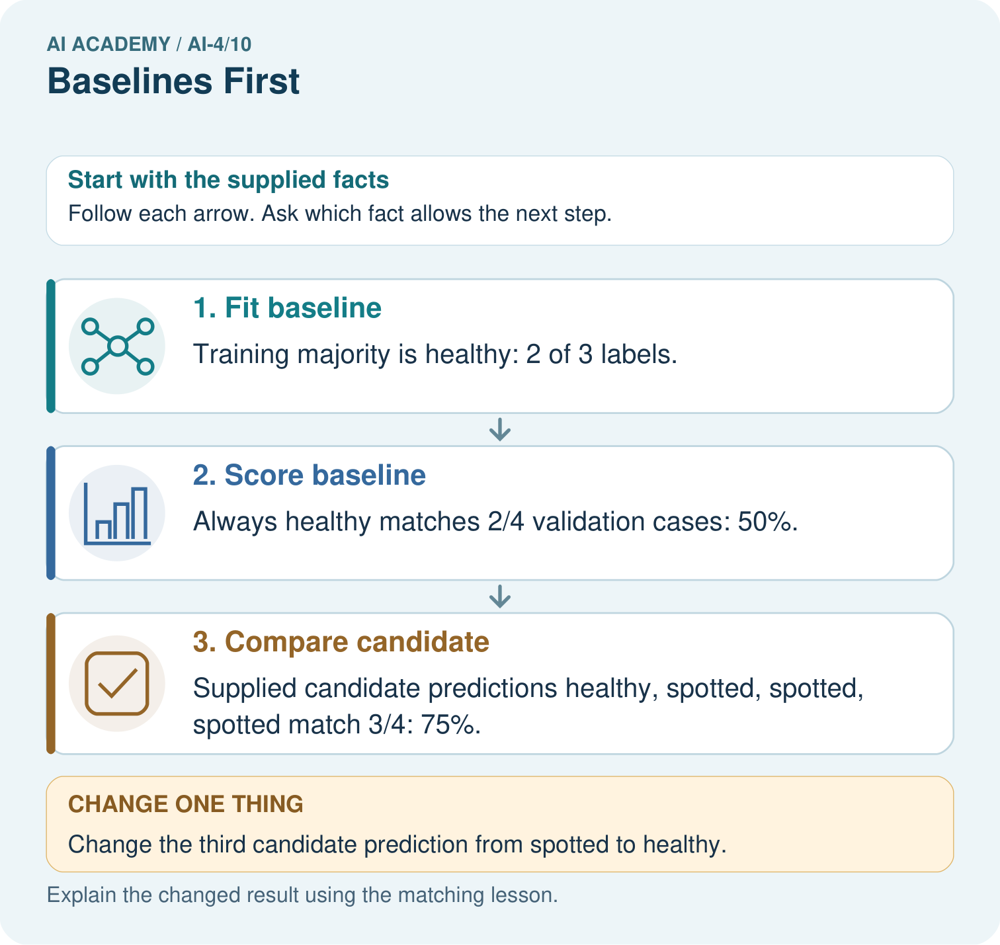
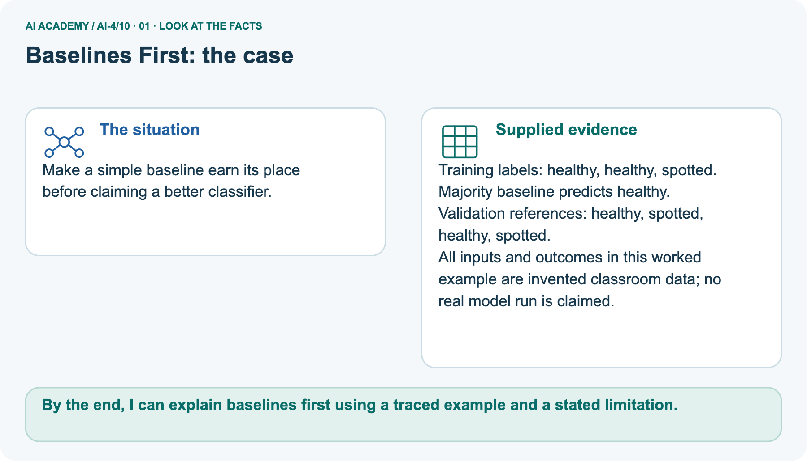
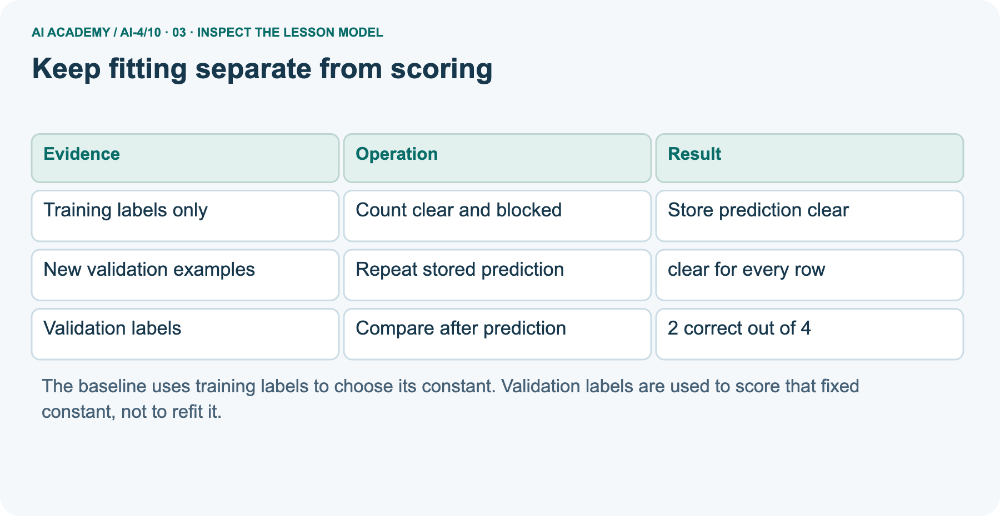
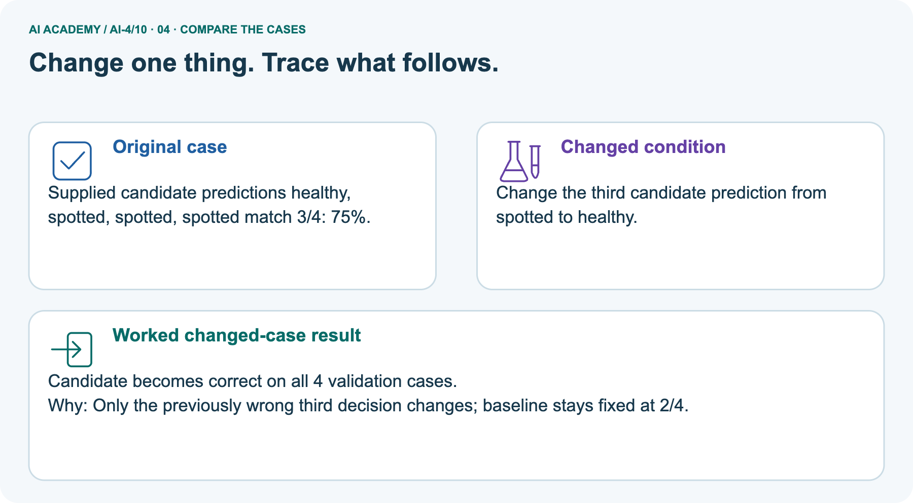
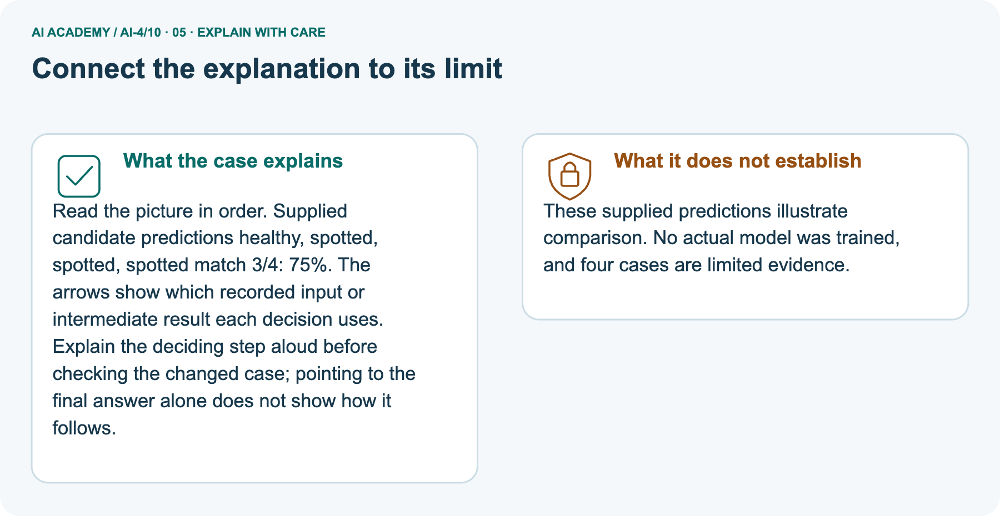

AI Academy · Level 4 · Grade 9 · Week 10 · Teacher guide
Baselines First
Learn to understand, design, build, test and explain AI systems responsibly.
Project: Responsible Plant Classifier
THE CONNECTED WEEK
Teach every score with its row-level evidence.
Use complete fixtures, distinguish percentage points from relative changes and keep development separate from final evaluation.
Keep one habit: Require error-type counts and bounded conclusions as well as the total score.
Main lesson · Section 1
Prepare the connected experiment
Keep prior exposure, shared practice and independent evidence distinct.
Goal and main teaching plan
Primary target: Fit a majority label baseline using training labels only
| Session | Sequence and minutes | Resources |
|---|---|---|
| Session 1 · Understand · 45 min | 0–7: recall and prerequisite; 7–15: inspect the concrete case and predict; 15–30: teacher models the worked trace; 30–40: learners explain a step using the text and visual; 40–45: check the core idea. | Sections 1–6; record the brief recall in the workbook. |
| Session 2 · Practise · 45 min | 0–5: retrieve the procedure; 5–15: W2 completion practice; 15–23: explain and check with a partner; 23–30: each learner answers the misconception check; 30–40: targeted reteaching or a harder variation; 40–45: prepare the investigation. | Sections 7–10; use the matching workbook W2 and misconception check. |
| Session 3 · Investigate and transfer · 45 min | 0–5: retrieve the decision rule; 5–20: investigate or trace; 20–30: start the independent case; 30–38: connect the project; 38–43: act on feedback; 43–45: plan the return check. | Use “Run the investigation”, “Connect your project”, “Show what you know”, “Study a complete case” and “Try a new case independently”. Give extra time for the full task set. If this week has a coding lab, use its named section; section numbers can change when extra explanations are included. |
This is a starting allocation of 135 minutes, not a validated duration. Preserve all named topics. Schedule extra time for connected examples, the full investigation, independent cases and project building.
Repeated copies of a case share one recorded attempt; they are not new evidence.
Materials and prerequisite
Teach two 45-minute sessions. Fit a binary majority-label baseline from training labels and freeze its prediction before scoring. The invented set uses one frame per distinct trip; it is separate from Week 6 data.
Supplied candidate predictions are comparison examples, not an implemented fitted model. Treat this as a first benchmark and evidence lesson, not a readiness test.
Use the supplied scenario, student illustrations and blank paper. For numeric work, offer counters or a calculator after learners show the setup. Fictional records are supplied; personal data and paid accounts are unnecessary.
Related frames can share conditions and objects. Keeping the trip together prevents that trip from appearing in both development and evaluation sets.
Printed lesson and workbook
Six training label cards and four validation cards kept in order
Optional Python 3 editor with no extra packages
Blank comparison table with row reference baseline candidate and matches
Opening retrieval
Without opening the old lesson, explain one key idea from Dataset Cards. Give an example and a mistake that the idea helps you avoid.
Look for: Inspect row meaning missing values and repeated records
Reference example, not the only acceptable wording: One row is intended to represent one indoor practice trip.
The source is a teacher-authored fictional export for this lesson, duration uses minutes, and None means unknown rather than zero.
Without opening the old lesson, explain one key idea from Sampling and Intended Use. Give an example and a mistake that the idea helps you avoid.
Look for: Define the population and conditions in an intended-use statement
Reference example, not the only acceptable wording: Compare intended conditions with observed photo counts and distinct source plants. In Coverage v1, A has counts9,0,1,0 and B3,3,3,3 across day/A,day/B,evening/A,evening/B. Copying rows does not fill missing cells; coverage is not measured accuracy and unknown class/species selection remains a limit.
Without opening the old lesson, explain one key idea from Python and Table Readiness. Give an example and a mistake that the idea helps you avoid.
Look for: Specify a table schema
Reference example, not the only acceptable wording: activity: nonempty text; minutes: integer from 0 to 60 inclusive.
End goal
By the end, I can explain baselines first using a traced example and a stated limitation.
Earlier wording, alternatives and picture transcripts
Teach the learning cycle
Retrieval answer guidance
Dataset Cards
Sampling and Intended Use
Python and Table Readiness
Use the student module and workbook section with this exact week title. The worked case, independent question and answers below form one aligned lesson sequence.
What the learner must demonstrate
A dataset contains 27 healthy and 3 spotted leaves. An always-healthy baseline gets what accuracy and spotted recall? What must a new model improve upon?
Concept to explain
A model must be compared with a simple transparent strategy on the same untouched examples.
| Term | Meaning |
|---|---|
| baseline | simple comparison method |
| majority class | most frequent training label |
| rule baseline | transparent fixed decision rule |
| incremental value | measured gain beyond baseline |
Prepare the class
This compact option is not the full-week schedule. Use the main teaching cycle and allow extra sessions for the investigation, independent work and project.
Allow 80 minutes: recall 8; explanation 12; worked demonstration 15; guided practice 20; independent assessment 15; project and reflection 10. Extend the lab into a second session when needed.
Preparation for the connected explanation
Readiness answer
End goal for the pictorial case
This added worked case illustrates the week’s main idea. Retain all original and connected topics; schedule its practice within the teaching cycle.
Main lesson · Section 2
Teach training-only baseline fitting and row-aligned scoring
Keep training counts, evaluation scores and improvement units separate.
Complete source, labels and majority choice
A learner reports that a classifier gets 80 percent correct. Is that useful? We need to know the task, the examples and what a simple method achieves on those same examples. A baseline is a reference method.
This week our baseline ignores each scene and always predicts the label that is most common in the training set.
Use a new teacher-authored fictional dataset for predicting clear or blocked lanes. Each listed row describes one frame from a different trip on a familiar route; training and validation trips do not overlap. This is a new practice set, not the twelve-frame table from Week 8. All supplied labels have been resolved under the classroom rule. There are no review cases in this exercise, and no real navigation claim is made.
| Set | Labels in row order | Use |
|---|---|---|
| Training | clear clear blocked clear blocked clear | Choose the constant label |
| Validation | blocked clear blocked clear | Score the fixed predictions |
| Final test | Not supplied in this exercise | Keep for later final evaluation |
The training counts are four clear and two blocked. Our stated method therefore predicts clear for every new example. A baseline can still learn a value from training data; simple does not mean it uses no data.
If the two training counts tie, our rule chooses clear, declared before scoring.
Trace validation score and assumptions
The output is clear 2 4. The fixed prediction matches two of the four validation labels, so accuracy is 2/4 or 50 percent. The training majority share, 4/6, is not the validation accuracy.
The baseline does not inspect the validation labels to decide which constant to predict.
The code assumes nonempty training data with only clear and blocked labels. It counts matches on the supplied validation list; a percentage also requires a nonempty validation set.
Do not run it on empty training data and describe the default clear value as learned evidence. Other labels and unresolved review statuses need an explicit policy.
| Term | Meaning |
|---|---|
| Baseline | A simple reference method used to judge a more complex approach |
| Majority label | The label with more examples than the other label in this binary task |
| Accuracy | Correct predictions divided by the number of scored examples |
| Percentage point | A unit for the difference between two percentages |
Compare supplied corridor candidate
Suppose a candidate method supplies blocked, clear, clear, clear for the four validation rows in the table. These are supplied predictions for a comparison exercise; we have not fitted that candidate.
It gets three of four correct, or 75 percent. The baseline gets two of four, or 50 percent. The candidate is ahead by one correct example and 25 percentage points on this set.
Use identical row IDs, reference labels, exclusions and metric for both methods. Match predictions to their rows even if files are reordered. A score on easier examples is not a fair comparison.
Neither this four-row result nor beating one baseline proves that the candidate will perform well on future trips.
Record training counts, the fixed prediction and tie rule, validation IDs and labels, prediction lists and correct/total counts. Keep the final test separate from development decisions.
Next week we will search candidate rules using training evidence, then compare choices carefully.
Read separate pictured leaf facts
Make a simple baseline earn its place before claiming a better classifier.
Training labels: healthy, healthy, spotted. Majority baseline predicts healthy. Validation references: healthy, spotted, healthy, spotted.
All inputs and outcomes in this worked example are invented classroom data; no real model run is claimed.
The pictured leaf example and corridor example both start at2/4 and compare a3/4 candidate, but their labels and wrong-row identities differ. Corridor baseline missesV1,V3; supplied candidate missesV3. Leaf baseline missesrows2,4; leaf candidate missesrow3.
Fixing only the leaf candidate’s third prediction gives4/4 on that same development set; it is an answer-informed illustrative repair, not new independent validation. The original50%→75% difference is25percentage points; relative gain in accuracy is25/50=50%, a different quantity.
Trace picture and changed prediction



Read the picture one step at a time
Read the picture in order. Supplied candidate predictions healthy, spotted, spotted, spotted match 3/4: 75%. The arrows show which recorded input or intermediate result each decision uses.
Explain the deciding step aloud before checking the changed case; pointing to the final answer alone does not show how it follows.
These supplied predictions illustrate comparison. No actual model was trained, and four cases are limited evidence.
Change: Change the third candidate prediction from spotted to healthy.
Prediction: Candidate becomes correct on all 4 validation cases.
Reason: Only the previously wrong third decision changes; baseline stays fixed at 2/4.
Additional imbalance/recall example
A test set has eighteen healthy and two spotted leaves. Baseline always predicts healthy.
Calculate and critique accuracy.
18/20=90%, but spotted recall is 0/2=0%. Compare with task-relevant metrics and the trained model.
Earlier wording, alternatives and picture transcripts
Explain the mechanism
Trace the information, fitted behavior, and evaluation proof separately.
QUESTION Build majority-class and one-rule baselines, then calculate their results.
MODEL IDEA A model must be compared with a simple transparent strategy on the same untouched examples.
PROOF NEEDED Use an unseen case, visible calculation, error analysis, and a stated limitation.
UNDER THE HOOD Test set has 12 healthy and 8 spotted leaves. Always-healthy baseline gets 12 ÷ 20 = 60% accuracy but 0% spotted recall.
Draw a fresh data → model → prediction → evaluation trace:
Predict first. Then check each step. A correct answer without visible evidence cannot be audited.
STEP 1 Test set has 12 healthy and 8 spotted leaves.
STEP 2 Always-healthy baseline gets 12 ÷ 20 = 60% accuracy but 0% spotted recall.
STEP 3 On the same 20 leaves, the visible-spot rule correctly labels 5 spotted leaves, misses 3 spotted leaves, correctly labels 10 healthy leaves and falsely marks 2 healthy leaves as spotted.
Accuracy=(5+10)/20=75%; spotted recall=5/8=62.5%.
STEP 4 A learned model must beat relevant baseline metrics—not only one convenient total.
CHECK Verify the denominator, unit, split, class definition, and data version before interpreting a score.
Recalculate, retrace, or restate the evidence independently:
Concrete teaching case
Exact explanation to model
Explain the added worked example
Key terms
Model the reasoning aloud
Use the complete worked example below before asking learners to complete W2. Reveal a small part, invite a prediction, then explain the deciding step.
These teacher notes contain solutions; do not reveal the independent case answer during modelling.
| Thinking move | Teacher prompt |
|---|---|
| Plan | What is given? What is the question? Which procedure fits these facts? |
| Do | Point to each input and intermediate step in the worked trace. Name the rule that allows the next step. |
| Check | Does the output answer the question? Which assumption or limitation prevents a larger claim? |
Use the diagram and verbal explanation together. Ask learners to match a sentence to a specific visual step; do not assign learners fixed visual or auditory learning styles.
A pictorial worked case: Baselines First
The facts we will use



Why this result follows
What this example does not establish
Change one thing in the pictured case
Ask while showing the picture
Cover the result. Ask learners to name the inputs and predict the next step. Uncover one step, connect the icon to the actual procedure, and explain its evidence. Then change the supplied condition and compare.
The picture is a representation; it does not document execution of a real AI model.
Main lesson · Section 3
Guide the calculation, then remove help
Collect each learner’s prediction before showing its key.
Current completion task and checked key
Completion task: List the four baseline predictions and mark which validation rows are correct. Give correct/total and accuracy. Explain why 4/6 is not the answer.
Teacher check: Predictions are clear, clear, clear, clear. Rows 2 and 4 match, giving 2/4 or 50 percent. The fraction 4/6 describes clear labels in training, not correct predictions on the four validation rows.
Start by identifying the given inputs together. Leave the intermediate steps blank. If needed, model one step, then withdraw that help on the next step. Move to a full trace only when the partial trace is understood.
For partners, alternate explainer and checker; collect a response from every learner before discussion.
Individual misconception check
Use the worked case for A baseline before a model. Proposed explanation: “A simple baseline does not need training data”. Decide whether this explanation is supported.
Point to the step or supplied fact that decides; explain your repair if needed.
Expected correction: This method learns its constant from training label counts, although it ignores input features.
Collect explanations, not only yes/no votes. If a misunderstanding is common, re-model the relevant step for the class.
If it affects a few learners, give a short targeted group explanation while others solve a more demanding variation.
Pictorial question and changed-case reasoning
Can the candidate’s training accuracy replace this validation comparison? Point to the relevant step in the picture, then write the changed result and the rule or evidence that supports it.
No. Compare candidate and baseline on the same held-out cases and references; training fit answers a different question. Changed-case check: Candidate becomes correct on all 4 validation cases.
Only the previously wrong third decision changes; baseline stays fixed at 2/4.
Changed-case reasoning: Candidate becomes correct on all 4 validation cases. Only the previously wrong third decision changes; baseline stays fixed at 2/4.
Collect each learner’s explanation before discussion. Use the first missing connection between input, deciding step and result to choose support. This question is worked-case practice, not fresh mastery evidence.
Keep each learner explaining
Ask: Which facts are given, and which would we have to assume? Learners mark relevant details before discussing answers.
Say: Predict first. Show the rule, information path or calculation that would produce the result. A correct guess is not yet an explanation.
In pairs, one learner solves while the other checks evidence; exchange roles. Remove the worked answer before independent assessment.
Earlier wording, alternatives and picture transcripts
Compact alternative: this two-session sequence covers selected core tasks. Use the three-session weekly plan for the full lesson, independent transfer, feedback and project work; allow extra time for extensions.
Demonstrate and guide practice
Board sequence
Write the given facts: A test set has eighteen healthy and two spotted leaves. Baseline always predicts healthy.
Write the question to explain: Calculate and critique accuracy.
Reveal after predictions: 18/20=90%, but spotted recall is 0/2=0%. Compare with task-relevant metrics and the trained model.
Use the earlier transfer question as additional practice. Reserve the fresh majority-fitting and candidate comparison task for the first individual attempt and record support used.
Classroom dialogue
Reveal reasoning one step at a time. Explain why a tempting alternative fails. Write units and denominators for arithmetic, trace conditions for decisions, and identify supporting sources for claims.
Model these guided questions
Guided: the baseline misses rows 1 and 3; the candidate misses only row 3, adding one correct example. The difference is 75 minus 50 = 25 percentage points.
Relative improvement in accuracy would be (75 minus 50)/50 = 50 percent; keep the measure explicit. Exit: equal accuracy does not establish identical mistakes or suitability.
Inspect predictions by row, missed blocked cases, false blocked predictions, sample coverage and consequences, then evaluate using an appropriate held out process.
Case-specific teaching sequence
| Stage | Teacher action |
|---|---|
| Session 1 start to 7 minutes | Retrieve the split roles and related-trip issue. Ask what a score means without a reference method. |
| 7 to 18 minutes | Count training labels and write the constant before revealing validation labels. State the tie rule before any comparison. |
| 18 to 32 minutes | Trace the code. Complete W1 and W2, separating training share from validation accuracy. |
| 32 to 45 minutes | Build a row-by-row comparison for the supplied candidate. Complete the guided percentage-point question. |
| Session 2 start to 8 minutes | Retrieve what changes if the baseline constant is chosen using validation labels. |
| 8 to 20 minutes | Discuss the two unfair comparisons and complete W3. Require common rows, labels and scoring policy. |
| 20 to 35 minutes | Collect W4 independently before hints. Require the training counts, both prediction lists, scores and restrained claim. |
| 35 to 45 minutes | Use W5 and the exit question to compare error patterns. Give the fresh retry after feedback and record support. |
Reduce help deliberately
Individual reasoning check
Pictorial practice question
Reasoned teacher answer
Main lesson · Section 4
Run the complete supplied investigation
Keep predictions, observed or supplied outcomes and unmeasured cases separate.
Supplied inputs and checked guidance
Two-baseline lab V1–V4:majorityclear2/4,blocked recall0/2;predeclared marker>=6 rule3/4,blocked recall1/2. Source data invented,rule not fitted on validation. Probe tie→clear;empty→unavailable;changedvalidblocked,blocked,blocked,clear→constantclear1/4.
Independent trainingblocked3/clear2→blocked×4;validationclear,blocked,clear,blocked baseline2/4,candidateclear,blocked,blocked,blocked3/4,one extra correct/25percentage points;future readiness unsupported.
Predict, investigate and record
1. Write the hypothesis and expected evidence before running.
2. Baseline Challenge: calculate two baselines on one fixed set, compare class-specific errors, and choose the honest benchmark.
3. Run one normal, one boundary, one missing, and one shifted case.
4. Calculate the metric from raw counts or row-level errors.
5. Interpret what changed, what did not, and what remains unsafe or unknown.
Keep the experiment ledger
| Record | What to capture |
|---|---|
| Input or evidence | Exact data, instruction or claim |
| Expected result | Answer or safe fallback declared before the run |
| Observed result | Actual result, including errors |
| Explanation | Rule, calculation or evidence explaining the outcome |
| Next test | One justified change and a new prediction |
Diagnose the current misconceptions
A simple baseline does not need training data: This method learns its constant from training label counts, although it ignores input features.
Training majority share is validation accuracy: Fit using training labels, then count matches separately on validation rows. Their label proportions can differ.
Beating a baseline proves the system is ready: It is one comparison on specified examples. Error types, coverage, uncertainty and final evaluation remain relevant.
Choose accessible support
| What the response shows | Next teaching action |
|---|---|
| Missing or misread facts | Read the case aloud, mark supplied versus unknown facts, and let the learner restate it. |
| Wrong procedure | Return to the deciding step in the worked case. Contrast it with the proposed incorrect explanation. |
| Arithmetic or implementation error | Trace intermediate values or lines; preserve the first mismatch and retry that step. |
| Correct result without a reason | Ask for a trace and a changed case before marking independent understanding. |
| An unsupported wider claim | Ask which supplied evidence supports the claim and which further observation would be needed. |
Offer an oral explanation, drawing, enlarged visual or fewer examples when that removes a reading/writing barrier. Keep the same reasoning goal.
Stretch secure learners by changing a boundary or assumption and asking them to defend the effect, not simply by assigning more of the same questions.
Earlier wording, alternatives and picture transcripts
Run the weekly evidence lab
Keep the test conditions fixed, record every result, and change only one planned factor.
Make the lab runnable
Use the supplied complete investigation for shared practice. Reserve the fresh majority-fitting and candidate comparison task for the individual first attempt before hints or feedback; earlier transfer questions remain additional practice.
Diagnose and reteach
MISCONCEPTION TO REPAIR Any trained model is more intelligent and therefore better than a simple rule.
For guessing, return to given facts and request a trace. For vocabulary without application, use one example and one non-example. For arithmetic errors, check the setup before the calculation.
Finish with a different uncoached case before recording mastery.
Address these additional misconceptions
Match the support to the first error
Main lesson · Section 5
Assess the selected experiment transfer
Keep this key until after a first attempt; record any help and prior exposure.
Selected independent task and checked key
Selected case: New training labels are blocked, clear, blocked, blocked, clear. New validation labels are clear, blocked, clear, blocked. Fit the same baseline rule and list its four predictions.
A supplied candidate predicts clear, blocked, blocked, blocked. Score both on these rows and state the difference in correct examples and percentage points. What claim remains unsupported?
Training counts are three blocked and two clear, so predict blocked four times. The baseline matches rows 2 and 4: 2/4 or 50 percent. The candidate matches rows 1,2,4: 3/4 or 75 percent.
It gains one correct example and 25 percentage points. This tiny validation comparison does not prove future performance or readiness for use.
Judge trace, scope and support
| Dimension | Evidence required |
|---|---|
| Explanation | Names the applicable idea or procedure and ties it to the supplied facts. |
| Trace and result | Preserves the given inputs and shows the relevant intermediate steps; distinguishes a prediction from an observed execution. |
| Limits | States the assumptions, missing evidence or conditions under which the result would change. |
Record each dimension as not yet, with support, or independent. Accept a valid alternative procedure with a defensible trace.
Do not penalise an honestly recorded model failure if the learner correctly explains its evidence and limits.
Give one repair action
Name the earliest unsupported step and give one action to repair it. Have the learner make that repair now and explain why. Then assess the relevant skill on a fresh, fully specified case.
Confirm it was not previously practised with feedback; solve and check the new case before assigning it. A follow-up design prompt is a starting brief, not automatically an equivalent test.
W1 Choose from training evidence
Count clear and blocked in the worked training list. State the constant prediction and the declared tie rule. Explain why the validation majority does not choose this baseline.
Training has four clear and two blocked, so the constant is clear. A tie chooses clear under the declared classroom rule.
Validation labels score the stored prediction; using their majority to choose it would change the fitting procedure.
W2 Calculate the validation score
List the four baseline predictions and mark which validation rows are correct. Give correct/total and accuracy. Explain why 4/6 is not the answer.
Predictions are clear, clear, clear, clear. Rows 2 and 4 match, giving 2/4 or 50 percent. The fraction 4/6 describes clear labels in training, not correct predictions on the four validation rows.
W3 Make the comparison fair
A candidate is scored on ten easy rows and the baseline on four difficult rows. Describe a fair comparison and two details you must record.
Score both methods on the same intended validation examples with matched IDs, reference labels, metric and exclusion policy. Record predictions, correct/total counts and the training-derived baseline rule.
Different example sets do not isolate a method difference.
W5 Explain the hidden error
A training-derived clear baseline gets nine of ten validation cases correct; the labels are nine clear and one blocked. State its accuracy and missed case. If a candidate also gets nine correct, must it miss the same case?
Explain.
Accuracy is 90 percent, and the baseline misses the sole blocked case. A candidate could also score 90 percent by correctly identifying blocked but missing one clear case.
Equal totals do not imply identical errors; inspect predictions by row and error type.
Earlier wording, alternatives and picture transcripts
Assess and explain the answers
Worked case answer
18/20=90%, but spotted recall is 0/2=0%. Compare with task-relevant metrics and the trained model.
Additional transfer practice question
A dataset has 18 grass and 2 fern examples. A baseline always predicts grass. Compute accuracy and name a serious limitation.
Reasoned practice answer
Accuracy is 18/20 = 90%, but fern recall is 0/2. The high total hides complete failure on the minority class.
What counts as evidence
| Criterion | 0 points | 1 point | 2 points |
|---|---|---|---|
| Result | Incorrect or absent | Partly correct | Correct with necessary conditions |
| Reasoning | No supporting trace | Some steps | Clear mechanism, calculation or source support |
| Limit | Overclaims certainty | Vague limitation | Relevant uncertainty or missing fact |
| Transfer | Copies without adapting | Adapts with prompts | Solves a changed case independently |
Use 6/8 as a classroom checkpoint, with 2 required for both Result and Reasoning. This is a proposed teaching rule, not a validated certification threshold.
Do not count a coached answer as independent mastery; correct unsafe or unsupported claims regardless of total.
Feedback
Ask the learner to find the evidence that challenges this claim: “A 90% baseline necessarily serves both classes well.” Keep the first attempt and an uncoached retry separate.
Original transfer answer
Accuracy=27/30=90%; spotted recall=0/3=0%. A new model should be compared on task-relevant metrics and error consequences, not only accuracy.
Fit a majority baseline using training labels, without using final labels to choose the class.
Explanations for the additional workbook examples
W1 Choose from training evidence
W2 Calculate the validation score
W3 Make the comparison fair
W4 Fit and compare independently
New training labels are blocked, clear, blocked, blocked, clear. New validation labels are clear, blocked, clear, blocked. Fit the same baseline rule and list its four predictions.
A supplied candidate predicts clear, blocked, blocked, blocked. Score both on these rows and state the difference in correct examples and percentage points. What claim remains unsupported?
Training counts are three blocked and two clear, so predict blocked four times. The baseline matches rows 2 and 4: 2/4 or 50 percent. The candidate matches rows 1,2,4: 3/4 or 75 percent.
It gains one correct example and 25 percentage points. This tiny validation comparison does not prove future performance or readiness for use.
W5 Explain the hidden error
Assess independent transfer
Selected case answer
Feedback that the learner uses
Main lesson · Section 6
Connect, support and revisit the experiment
Retain failures and assess a fresh parallel case after help.
Project evidence
Record majority and transparent-rule baselines for the Plant Classifier using the frozen test plan.
Keep the decision, input, result, explanation and remaining limitation in the project evidence record. Retrieve this record next week rather than restarting the project.
For your Responsible Plant Classifier, save the input, procedure, observed result and limitation of this check.
Label this worked example as practice; use a different, previously unreviewed case when checking independent understanding.
Support and selected reassessment
Use a tiny labelled dataset, explicit units and a named positive class. Stretch: require a baseline, held-out evaluation and subgroup or shifted-condition analysis with denominators.
Use labelled cards and matching ticks before fractions. Supply a blank row-aligned comparison table without predictions.
Extension: construct two different prediction lists with identical accuracy but different missed rows, and explain how to report both.
Require W4 blocked from counts 3 versus 2, baseline 2/4, candidate 3/4, one extra correct and 25 percentage points. Fresh retry: training clear, blocked, blocked, clear is tied, so choose clear by the declared rule.
Validation blocked, clear, blocked, blocked gives baseline 1/4 or 25 percent. Candidate blocked, clear, clear, blocked gives 3/4 or 75 percent: two extra correct and 50 percentage points.
Require the tie rule and explain why validation majority blocked cannot replace the stored constant.
Delayed return
Suggested return points in this level: ai-4/11, ai-4/13, ai-4/16. Use actual classroom dates, adjusting for holidays and gaps. One, three and six teaching weeks are scheduling choices, not a claimed optimal spacing.
At a delayed check, ask for the idea from memory and a changed application. Compare with the earlier independent response and record support used.
For a new level, revisit the previous capstone before checking the new prerequisites.
| Record | Teacher evidence |
|---|---|
| Learner code and date | |
| Concept and case used; prior exposure | |
| Explanation / trace / limits | |
| Support and first repair | |
| Changed case and delayed outcome | |
| Next teaching action |
Use the evidence to choose reteaching or the next step. A completed page, confidence rating or attractive project does not by itself demonstrate understanding.
Bridge and reflection
Ask for one decision the learner can now justify and one situation requiring more evidence or human review. Confidence ratings are separate from correct independent performance.
Next: Week 11: Decision Trees. Retrieve today’s evidence and identify what carries forward and what is new.
Next is Week11: Decision Trees. Carry forward the training-derived baseline, declared tie policy and row-aligned validation comparison. Primary reference: https://scikit-learn.org/stable/modules/generated/sklearn.dummy.DummyClassifier.html . This classroom exercise declares its own clear-on-tie policy; do not assume identical tie behavior from every library.
Earlier wording, alternatives and picture transcripts
Connect and extend learning
Responsible Plant Classifier
Support and stretch
Exit reflection
Bridge to the next week
Support and fresh reassessment
Plan the delayed return
Project evidence from this case
Reference bank and extra practice
Choose the reference that helps your next step.
Reference · Alternative planning checklist
Reference · Section 7
Reference · Alternative planning checklist
Use alongside the main route without repeating the whole cycle.
Planning and assessment reference
Teaching target: Fit a majority label baseline using training labels only
Prepare the labelled worked-case picture, the matching workbook, fictional input cards and a place for individual responses. Check a local Python 3 environment before class; have a paper-trace version ready.
| Session | Plan | Resources |
|---|---|---|
| Session 1 · Understand · 45 min | 0–7: recall and prerequisite; 7–15: inspect the concrete case and predict; 15–30: teacher models the worked trace; 30–40: learners explain a step using the text and visual; 40–45: check the core idea. | Sections 1–6; record the brief recall in the workbook. |
| Session 2 · Practise · 45 min | 0–5: retrieve the procedure; 5–15: W2 completion practice; 15–23: explain and check with a partner; 23–30: each learner answers the misconception check; 30–40: targeted reteaching or a harder variation; 40–45: prepare the investigation. | Sections 7–10; use the matching workbook W2 and misconception check. |
| Session 3 · Investigate and transfer · 45 min | 0–5: retrieve the decision rule; 5–20: investigate or trace; 20–30: start the independent case; 30–38: connect the project; 38–43: act on feedback; 43–45: plan the return check. | Use “Run the investigation”, “Connect your project”, “Show what you know”, “Study a complete case” and “Try a new case independently”. Give extra time for the full task set. If this week has a coding lab, use its named section; section numbers can change when extra explanations are included. |
Before class, solve the supported practice: List the four baseline predictions and mark which validation rows are correct. Give correct/total and accuracy. Explain why 4/6 is not the answer.
Reasoned practice answer: Predictions are clear, clear, clear, clear. Rows 2 and 4 match, giving 2/4 or 50 percent. The fraction 4/6 describes clear labels in training, not correct predictions on the four validation rows.
Check every learner before discussion: Use the worked case for A baseline before a model. Proposed explanation: “A simple baseline does not need training data”. Decide whether this explanation is supported.
Point to the step or supplied fact that decides; explain your repair if needed.
Misconception repair: This method learns its constant from training label counts, although it ignores input features.
Support: read the exact case aloud, enlarge the labelled picture, supply input cards and model only the first deciding step. Accept a spoken explanation or drawing; retain the reasoning goal.
Extension: Change the third candidate prediction from spotted to healthy. Require a prediction and a reason before comparing. Expected result: Candidate becomes correct on all 4 validation cases.
Reason: Only the previously wrong third decision changes; baseline stays fixed at 2/4.
Independent assessment: withhold the reserved answer until the learner has attempted the new case. Record support separately from correctness.
| Criterion | Not yet | With support | Independent |
|---|---|---|---|
| Explanation | Names an answer without a deciding fact | Uses a hint to link fact and decision | Explains the deciding fact in own words |
| Trace or test | Cannot connect input and result | Completes steps with prompts | Traces or tests a changed case accurately |
| Limits and revision | Claims more than evidence supports | Names a limit after a prompt | States a defensible limit and useful next test |
Project checkpoint: Make a transparent first version. Keep a trace of how one input becomes an output; explain the rule or learned component.
Use the weekly teacher answer for topic-specific reasoning. A saved progress tick is an activity record; judge mastery from the learner’s explanation and evidence.
Reference · Feedback and evidence records
Reference · Section 8
Reference · Feedback and evidence records
Keep supported rehearsal separate from independent performance.
Record and repair
Use the two formative questions as supported practice, not as independent mastery scores. Discuss the deciding evidence rather than accepting a guessed selection.
The feedback comes from the reviewed public worked case. Do not reveal the separately reserved independent teacher answer until the learner has attempted that case.
Use the earlier worked-explanation links to address a specific missing building block, then return to the current question. Adapt this suggestion after observing the learner; it is not an automatic diagnosis.
Collect the completed-work portfolio as evidence. Record support separately from correctness, and assess explanation, trace/test and limitations. Progress ticks and quiz selections alone do not establish mastery.
Earlier wording, alternatives and picture transcripts
Ask students to predict before running code. Preserve errors and actual outputs; collect a changed test and an explanation. The branch-boundary and indexing lessons deliberately include failure cases.
Reference · Teach with the six pictures
Reference · Section 9
Reference · Teach with the six pictures
Choose one picture for a specific reasoning move.
01. Baselines First: the case



Make a simple baseline earn its place before claiming a better classifier. Supplied facts: Training labels: healthy, healthy, spotted. Majority baseline predicts healthy.
Validation references: healthy, spotted, healthy, spotted. All inputs and outcomes in this worked example are invented classroom data; no real model run is claimed.
Point to the given fact that matters most. Explain why it matters.
Teacher prompt: Point to the given fact that matters most. Explain why it matters. Ask learners to describe one label or arrow in ordinary words. Use the adjacent transcript if the image is difficult to see.
02. Follow the deciding steps
Fit baseline: Training majority is healthy: 2 of 3 labels. → Score baseline: Always healthy matches 2/4 validation cases: 50%. → Compare candidate: Supplied candidate predictions healthy, spotted, spotted, spotted match 3/4: 75%.
Point to each numbered stage and explain which recorded input it uses.
Teacher prompt: Point to each numbered stage and explain which recorded input it uses. Ask learners to describe one label or arrow in ordinary words. Use the adjacent transcript if the image is difficult to see.
03. Keep fitting separate from scoring



Keep fitting separate from scoring. Training labels only | Count clear and blocked | Store prediction clear. New validation examples | Repeat stored prediction | clear for every row.
Validation labels | Compare after prediction | 2 correct out of 4
Read the labels and values. Explain the relationship the model shows.
Teacher prompt: Read the labels and values. Explain the relationship the model shows. Ask learners to describe one label or arrow in ordinary words. Use the adjacent transcript if the image is difficult to see.
04. Change one thing. Trace what follows.



Original case: Supplied candidate predictions healthy, spotted, spotted, spotted match 3/4: 75%. Changed condition: Change the third candidate prediction from spotted to healthy.
Expected result: Candidate becomes correct on all 4 validation cases. Reason: Only the previously wrong third decision changes; baseline stays fixed at 2/4.
Predict before checking the worked changed-case result. Name what changed and what the supplied facts allow you to conclude.
Teacher prompt: Predict before checking the worked changed-case result. Name what changed and what the supplied facts allow you to conclude. Ask learners to describe one label or arrow in ordinary words.
Use the adjacent transcript if the image is difficult to see. Changed-case reasoning: Only the previously wrong third decision changes; baseline stays fixed at 2/4.
05. Connect the explanation to its limit



Read the picture in order. Supplied candidate predictions healthy, spotted, spotted, spotted match 3/4: 75%. The arrows show which recorded input or intermediate result each decision uses.
Explain the deciding step aloud before checking the changed case; pointing to the final answer alone does not show how it follows. Limit: These supplied predictions illustrate comparison.
No actual model was trained, and four cases are limited evidence.
Explain the case, then point to a limit on the claim.
Teacher prompt: Explain the case, then point to a limit on the claim. Ask learners to describe one label or arrow in ordinary words. Use the adjacent transcript if the image is difficult to see.
Keep the stated scope: These supplied predictions illustrate comparison. No actual model was trained, and four cases are limited evidence.
06. Make the idea visible in your project


For your Responsible Plant Classifier, save the input, procedure, observed result and limitation of this check.
Label this worked example as practice; use a different, previously unreviewed case when checking independent understanding. Draw your input, deciding step, result and limit.
Supported question: Can the candidate’s training accuracy replace this validation comparison? Point to the relevant step in the picture, then write the changed result and the rule or evidence that supports it.
Draw your project trace and justify the deciding step using evidence.
Teacher prompt: Draw your project trace and justify the deciding step using evidence. Ask learners to describe one label or arrow in ordinary words. Use the adjacent transcript if the image is difficult to see.
Supported practice key: No. Compare candidate and baseline on the same held-out cases and references; training fit answers a different question. Changed-case check: Candidate becomes correct on all 4 validation cases.
Only the previously wrong third decision changes; baseline stays fixed at 2/4.
Earlier wording, alternatives and picture transcripts
Use one picture at a time. Hide a worked result before asking for a prediction, then reveal it for feedback. These are supported teaching cases; retain the separate independent assessment for a fresh first attempt.